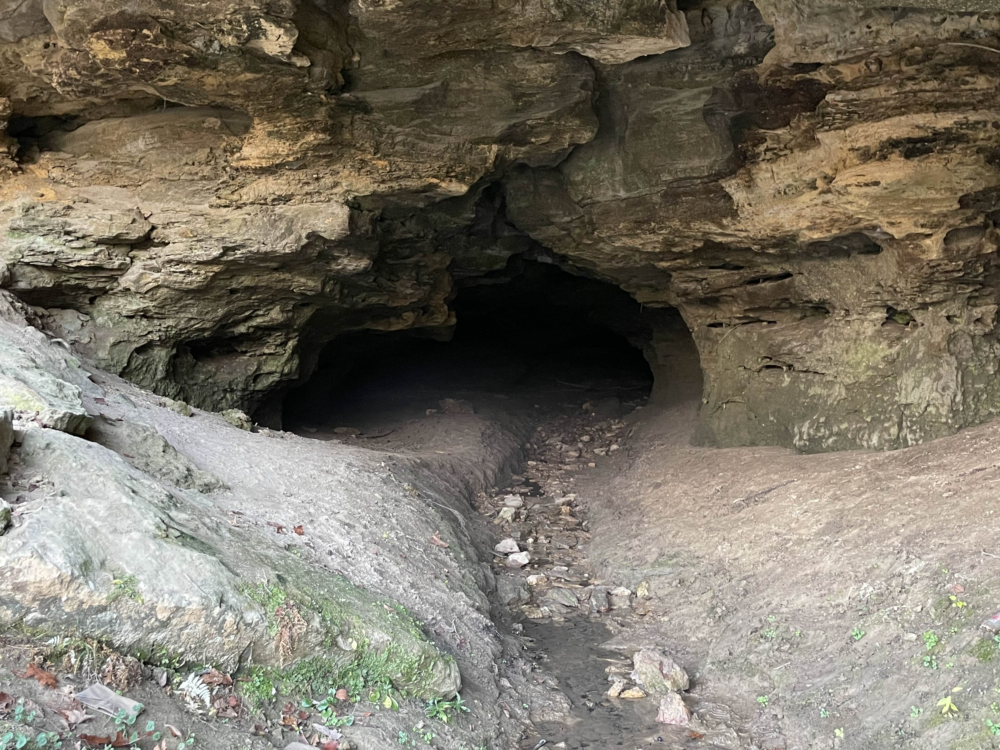
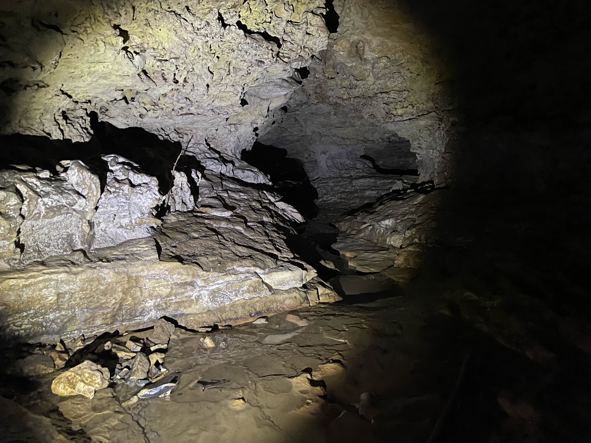
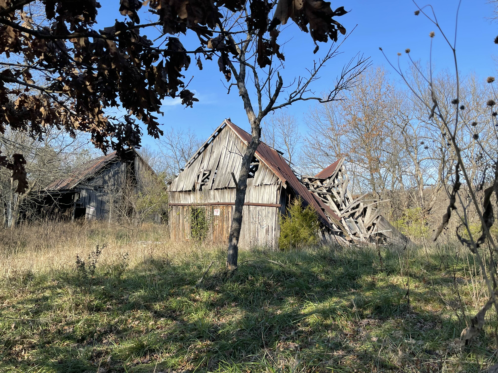
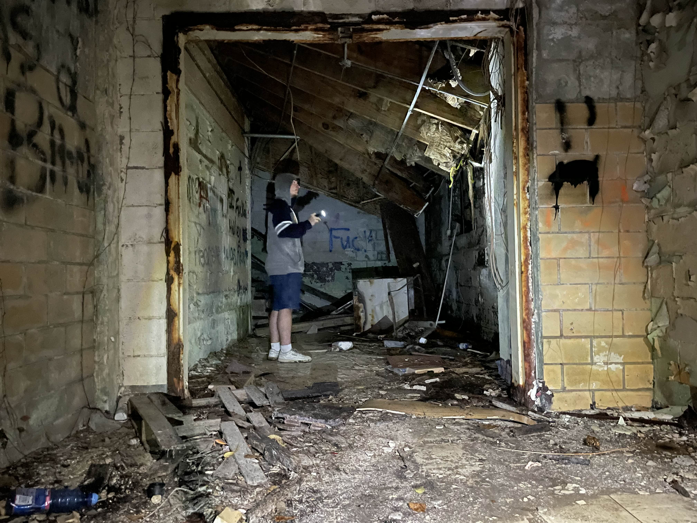

Activities & Adventures!
Caving
Arthur Minnesota is home to an extensive network of underground caves! Some are flooded, some are not, but scientists around the world have come to study them. They say that their formation is a geological mystery and that they shouldn't be there- but I disagree! They are there to EXPLORE! Have fun!

Urban Exploration
Live the live of a modern archeologist! Lake Eternity is surrounded by an assortment of amazing abandoned structures that are ripe for exploring. You never know what you might stumble across in the woods! Remember, if you find anything abnormal, alert the Clark Lifeguarding Division.

Reviews:
This looks so cool! But a little spooky. I want to try painting there.
I tried some of these, they are really cool! But why are there so many abandoned places around? It's not like this is a big town, it seems like there are more abandoned structures than normal buildings. Worth a visit!
Man, I wish this place wasn't a hoax. An urbexer's dream!
It's real, I've been there. I can't tell you how to get there, I can't even find my way back myself. There are no animals anywhere, it's all silent, like they avoid the place. There are only plants and they cover literally everything. I spent a week there just exploring, and it felt like just hours. No sign of life, no sign of what happened to everyone. Just gone. The only non-plants I saw were clams, just piles and piles of them on the shoreline, all rotting away.
Yeah sure you did buddy
The Big Fork
Reviews:
1 Star, TOO BIG!
Reviews:
Why aren't there any reviews for this still?
^^^ seconded, want to know if it's worth trying.
A couple camping next to us said they were going to try it the other day but I haven't seen them again to ask about it. Weird how no one seems to have tried this